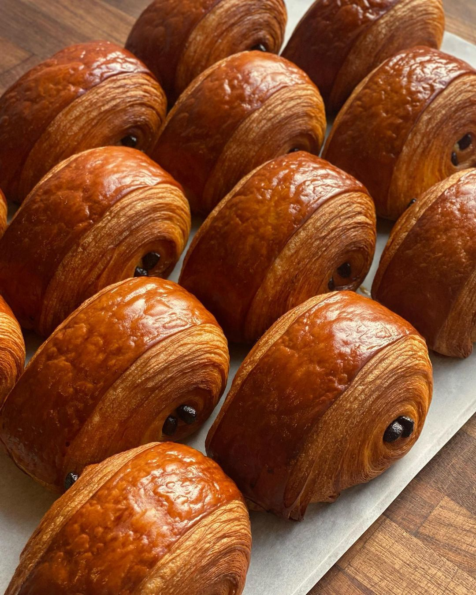

Pan de campo
Masa madre, fermentación lenta, miga húmeda y una corteza que se mantiene crujiente.
$85 por pieza
Ítaca Bakery
Pan hechos con amor
NUESTRO MENÚ
Selecciona una categoría, descubre los sabores disponibles y arma una combinación para desayunar, regalar o compartir.
Consultar la preventa
Son nuestras piezas más versátiles: perfectas para el desayuno, una comida tranquila o una tabla para compartir. Cada pan descansa el tiempo necesario para desarrollar sabor y textura.

Trabajamos la masa laminada con mantequilla para conseguir un exterior dorado y un interior ligero. Los sabores especiales cambian según la semana.

Tenemos rebanadas para consentirte y pasteles completos para cumpleaños, visitas o una tarde especial. Pregunta por la disponibilidad de decoración y tamaños.

Una bebida cambia por completo la experiencia de una pieza recién horneada. Pregunta cuáles tenemos disponibles el día de tu entrega.
Cada doblez y cada minuto en el horno ayudan a crear piezas ligeras y doradas. Descubre nuestros croissants en el menú.
Estas son algunas recomendaciones para empezar; revisa las pestañas de arriba para conocer todas las opciones de cada categoría.
Masa madre, fermentación lenta, miga húmeda y una corteza que se mantiene crujiente.
$85 por pieza
Relleno cremoso, almendra fileteada y un toque de azúcar para una pieza especial.
$75 por pieza
Bizcocho de vainilla, crema ligera y compota de frutos rojos para compartir.
Desde $360
Selección para consultar disponibilidad. El pastel se calcula desde $360; el precio final se confirma al cotizar.
Total estimado: $0.00
ESPECIAL DE LA SEMANA
Combina un cappuccino, chocolate frío o té de temporada con una pieza laminada. Las bebidas se preparan para acompañar tu entrega.
Consultar el especial de bebidas
Panes del día
El pan de campo y la focaccia son buenas opciones para compartir en casa.
Piezas especiales
Los rellenos de fruta, crema o chocolate pueden cambiar según la semana.
Consulta disponibilidad
Aparta tus favoritos antes de que cerremos la preventa.
Prueba un pan de campo si buscas corteza firme y miga suave para acompañar alimentos.
El croissant de mantequilla es una opción ligera para comer solo o con café.
Los pasteles se cotizan según sabor, tamaño y fecha para que recibas la cantidad adecuada.
Elige cappuccino, chocolate frío o té de temporada para completar tu pedido.